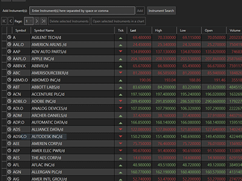
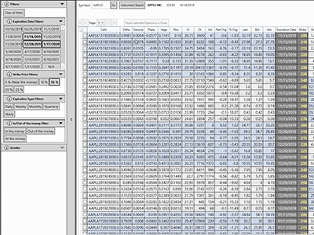
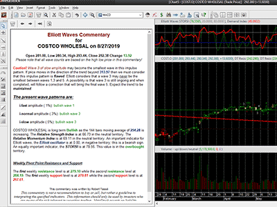
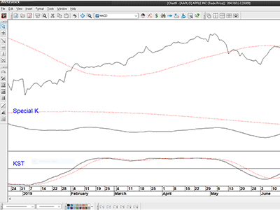
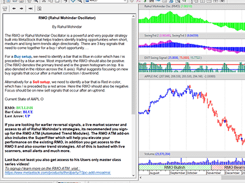
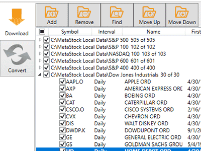
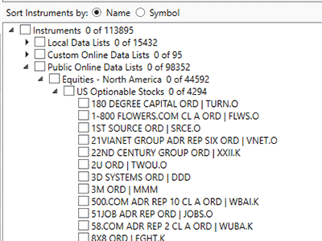
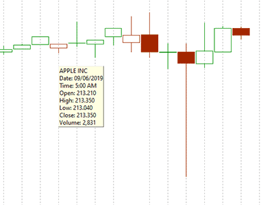
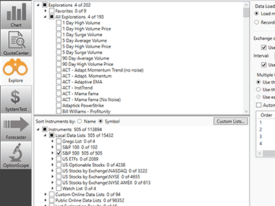
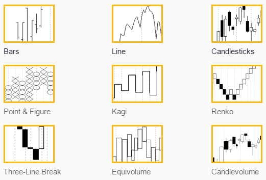

Overview
MetaStock Real Time (formerly MetaStock Pro) is specifically designed for real-time traders who use intra-day data to transact in real-time throughout the trading day (Interested in end-of-day trading? Check out MetaStock Daily Charts). Whether you're an experienced, active trader or just learning how to trade the markets, MetaStock Real Time helps you succeed. The software contains powerful analysis tools to help you make informed decisions about what to buy & sell and when to execute to make the most money possible. MetaStock Real Time comes with many out-of-the box trading solutions that are reliable and easy to use. And if you want to take your analysis to the next level, MetaStock Real Time gives you the ability to customize these solutions to your particular trading style.
MetaStock is a Sales Agent for this Refinitiv product, XENITH. Refinitiv provides the best global data for MetaStock clients. MetaStock R/T is the product that provides powerful charting for the XENITH platform. That is why we are so excited to team up with them. MetaStock Real Time is powered by the incredible Refinitiv XENITH Real-Time Data and News package. Refinitiv XENITH fuses the information, tools and analytics you need into a single desktop customized to the way you work. You can use the many pre-defined screens, like the "equity trader" screen, or easily customize your desktop to view the content you use most often.
Whether you trade stocks, bonds, mutual funds, futures, commodities, FOREX, or indices, MetaStock has the tools you need for superior market analysis and financial success. In fact, 84% of our customers report that they have been successful using the MetaStock software! Here is what one of our customers has to say about MetaStock:
"MetaStock is obviously made by people who understand traders' needs. It's a complete package that's easy to use, no matter what kind of securities you trade. It's the single tool that's allowed me to fine-tune my trading approach, pursue my avocation and build a satisfying retirement." - Michael Alakel
To see more of what our customers have to say about MetaStock Real Time, click this link to our Testimonials.
MetaStock Real Time can be purchased for a one time charge, subscribed to alone, or subscribed to in combination with XENITH data, but must also be paired with XENITH.
Benefits
MetaStock End-of-Day (EOD) offers many benefits to traders regardless of their experience level:
- MetaStock includes the very popular RMO Trading System- developed by famed trader Rahul Mohindar, this new system has taken Asia by storm. The RMO model not only increases your trading accuracy but also significantly automates the analysis process, right up to marking signals and even detecting fresh trading opportunities that you can profit from NOW.
- Fibonacci Projections- This unique line tool is based on the Fibonacci ratio principle. Using this, you could detect and mark key levels of support and resistance and at the same time set price targets to exit your trades better.
- MetaStock helps you create a system for trading. A coach wouldn't trade his players or direct his team without a system in place to make the right decisions. Your approach to trading your portfolio should be the same-with a systematic, objective plan to make the best possible decisions. MetaStock helps you do this.
- MetaStock removes the emotions from your trading-emotions of greed and fear. Spur-of-the moment decisions are not as reliable as decisions based on set criteria and reliable analysis. MetaStock gives you this-a trusted system so that you can objectively engage in buying and selling in the markets.
- MetaStock is easy to use. Many of the software packages available today are so difficult to understand that it takes months to be up and running. MetaStock, however, is known for its intuitive interface, easy to use tools, and an exceptional built-in Help system.
- MetaStock gives you confidence and an advantage over other traders in the marketplace. Success in the markets = profits, and 84% of our customers report that they have been successful in the markets using MetaStock software.
- MetaStock can be trusted. Equis, the creators of MetaStock, has been creating powerful financial graphics & technical analysis software since the early 1980's and we currently have over 150,000 retail customers. Because of our elite position in the individual investor marketplace, Equis was acquired by Thomson Reuters-the world's premier information provider.
- MetaStock is an integral part of the Reuters product line and is used by money managers & institutional traders across the globe. So with MetaStock, you have access to the same tools that financial professionals trust to make their trading decisions.
- MetaStock offers excellent support tools-whether you prefer to call our free support line, chat with a rep over instant message, browse our FAQ's on the web, or visit our Forum, you'll find the answers to your questions quickly and conveniently.
- MetaStock is customizable. To feel confident in your trades, you want a system based off of your own personal strategies, your tolerance for risk, the instruments that you trade, and your goals. So why would you ever use a software that's not flexible?
Whats New
Featuring the new Option Scope and new Quote Center

QuoteCenter is your one-stop spot to see the current status of the securities that you are interested in. You can view your pick list, your positions, your indices… any list you choose. More than that, you can easily build and set up lists using QuoteCenter.
Sort on a variety of criteria to view the data important to you, then just double click on a security if you want to see a chart. It’s a fast and easy way to make your workflow more efficient than ever. You can even change the color theme.
MetaStock R/T customers also have the option to view data in real-time.* MetaStock D/C customers can work with online data or use your offline data.
- View Symbol, Name, Tick, Last, High, Low, Open, Open Interest, Volume, Net Change, Percent Change, Date (or Time in MetaStock R/T, as well as Bid and Ask)
- View Online and Local Data
- Open Charts directly from QuoteCenter with just a click
- Open any list from Power Console (up to 600)
- Select any group of stocks to open in QuoteCenter
- Create and Manage lists
- Sort and rank on columns
- 3 available color themes for viewing quotes
*Data is delayed by 20 minutes if the customer has not subscribed to the associated exchange.

OptionScope puts all critical info at your fingertips. The OptionScope option chain display gives you sortable, customizable, color-coded options data – including the greeks.
The OptionScope filter window makes honing in on the data you want to see a breeze. Of course, MetaStock’s legendary charts are just a click away, saving you time and effort.
- MetaStock D/C customers can view Option Chains for any US Optionable Stock (requires additional options data)
- MetaStock R/T customer can view Real-time Option Chains for any global optionable equity*
- View Puts/Calls with Net Change, % Change, Bid, Ask, Implied Volatility, Close, Open Interest, and Volume
- View Greeks:Delta, Gamma, Theta, Vega, and Rho
- Sort by Expiration Date, Strike Price, Filters, Expiration Type, In/Out of the Money and Greek Parameters
- Filter on Expiration Date, Strike Price, Expiration Type, In/Out of the Money, At the Money, and Greeks.
*Data is delayed by 20 minutes if the customer has not subscribed to the associated exchange.

Based on the legendary work of R.N. Elliott, the MetaStock Elliott Waves System gives you the ability to chart High, Medium and Low volatility Elliott Waves. Formally a best-selling $300 MetaStock Add-on, this system comes standard in MetaStock 17. Out of the box, you get 3 expert advisors, 6 explorations, and 5 templates. You also have the free option as a 17 user to download the complete Suite of Elliott Tools.

Take advantage of Martin Pring's time-tested method for identifying emerging sectors in the market cycle. Formally a $299 add-on for MetaStock, Martin Pring's Special K combines short, intermediate and long-term time frames into one series. This “Special K” series often peaks and troughs with actual bull and bear market turning points. It can be used in many ways. The two most important are:
- Identify primary trend reversals at a relatively early stage
- Using short-term changes in direction of this unique indicator to spot 1 to 6-week buying and shorting opportunities
This add-on includes all the following:
- 7 indicators
- 4 Explorations
- 2 Expert Advisors
- 2 Templates

The Rahul Moihndar Oscillator has become a MetaStock favorite for both seasoned and beginning traders. It’s a very powerful strategy that helps traders identify opportunities when short, medium, and long trends align. Now you can take advantage of the legendary Expert Advisor commentary to describe in detail why and when bullish or bearish setup has occurred, giving you the knowledge and confidence you need to take the trade.

You can now download MetaStock legacy file formatted data. The newest version of the Downloader will allow you to work with any of MetaStock’s file formats. You can work with MS Local our newest file format, or if you need access to our legacy format you can use that as well! You can also cross convert between MSLocal, Legacy, and CSV.

It is no longer necessary to manually update your Symbol Database. Automatic download and update now take place every month for online data. You will be notified when your Symbol Database has been updated. This keeps your data lists fresh and updated without you having to do anything.

Some of the most important market moves take place outside regular trading sessions. Now, with MetaStock R/T you won’t miss a beat because Pre-Market and Post-Market data are built right in. With this new feature, you can turn on or off Pre/Post Market data allowing you to view the data the way you want to.

Details are important in order to make a software package easy and intuitive to use, while still packing a punch. MetaStock listened to our client's feedback and have added a host of new usability features to MetaStock 17.
- Renamed Files and Formulas in MetaStock to be more user-friendly
- Ability to quickly and easily back-up your user files.
- Clear Smart Charts in one click
- Faster Load time
- User Memory - Each time you open MetaStock, it remembers where you left off
- More responsive symbol search
- Easier access to past exploration results
- Quickly manage multiple explorations in the Power Console
- Easier-to-read Power Console interface
- Easier access to creating custom lists
- When closing multiple charts at the same time you can choose to “Save all” or “No to all”
- Ability to adjust data in Downloader
- Tab to next cell/field in Downloader
- Consistent name of items copied in PowerTools
Charting
MetaStock Sets the Standard in Charting
MetaStock gives you nine of the most widely-used price charting styles:

Page Layouts help you save time and stay organized. Save all of your on-screen charts together like pages in a book. So whenever you open your layout, the same securities appear.
Templates also save you time by applying the same set of indicators and studies to different securities. Rotate through different securities while keeping the same indicators and line studies on the screen.
Built-in toolbars let you easily refresh data, change periodicity, rescale the Y-Axis, zoom in & out, choose "previous" or "next security" in the open folder, and choose a security to open.
The Object Oriented Interface allows you to click on an object and get an instant menu for that item. The Click and Pick/Drag and Drop features let you drag price plots, indicators, text, and lines from one chart to another.
MetaStock PowerTools
NEW - MetaStock OptionScope®
An option chain with sortable, customizable, color-coded options data – including the greeks
OptionScope puts all critical info at your fingertips. The OptionScope option chain display gives you sortable, customizable, color-coded options data, and even the greeks..
The OptionScope filter window makes honing in on the data you want to see a breeze. Of course, MetaStock’s legendary charts are just a click away, saving you time and effort.
- MetaStock D/C customers can view Option Chains for any US Optionable Stock (requires additional options data)
- MetaStock R/T customer can view Real-time Option Chains for any global optionable equity*
- View Puts/Calls with Net Change, % Change, Bid, Ask, Implied Volatility, Close, Open Interest, and Volume
- View Greeks:Delta, Gamma, Theta, Vega, and Rho
- Sort by Expiration Date, Strike Price, Filters, Expiration Type, In/Out of the Money and Greek Parameters
- Filter on Expiration Date, Strike Price, Expiration Type, In/Out of the Money, At the Money, and Greeks.
NEW - MetaStock QuoteCenter®
Your one-stop spot to see the current status of the securities
With QuoteCenter you can view your pick list, your positions, your indices… any list you choose. More than that, you can easily build and set up lists.
Sort on a variety of criteria to view the data important to you, then just double click on a security if you want to see a chart. It’s a fast and easy way to make your workflow more efficient than ever. You can even change the color theme.
MetaStock R/T customers also have the option to view data in real-time.* MetaStock D/C customers can work with online data from DataLink or use your offline data (including MSLocal or Legacy formats!).
- View Symbol, Name, Tick, Last, High, Low, Open, Open Interest, Volume, Net Change, Percent Change, Date (or Time in MetaStock R/T, as well as Bid and Ask)
- View Online and Local Data
- Open Charts directly from QuoteCenter with just a click
- Open any list from Power Console (up to 600 instruments at a time)
- Select any group of stocks to open in QuoteCenter
- Create and Manage lists
- Sort and rank on columns
- 3 available color themes for viewing quotes
The MetaStock FORECASTER
A New and Unique Way to View Probable Future Prices
Imagine if you had a tool that could paint a more probable, easy-to-read picture of the future? A picture based on patent-pending technology that uses any of 69 event recognizers - or your own custom patterns. A picture that helps you more precisely set profit targets and stops. That’s what you get with the MetaStock FORECASTER, the latest PowerTool available exclusively in MetaStock.
The FORECASTER plots a “probability cloud” based on your selection of any of 67 event recognizers, or your own custom pattern. It uses advanced mathematics to examine the price action after these events to determine the probable performance of future events.
You can use the FORECASTER to:
- Read a detailed analysis of an event’s past performance
- Get a list of dates on which events had previously occurred
- See the probable out come of current events
- Discover which events a security reacts best to
- Draw you own custom patterns for recognition analysis
- And more.
The MetaStock Explorer
Scan the Markets to Find Winning Securities
There are thousands of stocks, currencies, options, and futures out there. More over, there are hundreds of indicators and systems you might want to use to trade them. How do you even begin to sort through the possibilities? How do you find the winners? That's where the MetaStock Explorer comes in. Now you can use YOUR criteria to scan a universe of securities to find the ones that fit YOUR strategy.
Here are some examples of possible scans:
- Discover which securities have generated a buy or sell signal based on your custom criteria
- Find the securities that have just crossed above their 200-day moving average
- Generate a performance report of all your mutual funds
- Discover the securities which ranked highest by Wilders RSI
- Generate a list of securities that are above their 10-week moving average, with a stochastic of 80 or higher
The list of possible scans is almost endless. Not only does this save countless hours of sorting and sifting, but it allows you to do things you simply could not do otherwise.
The MetaStock Expert Advisor
Consult the Experts
The MetaStock Expert Advisor gives you the input of industry professionals when and where you need it. Display the industry's most popular systems and charting styles with the click of a mouse. Need more info? Choose the commentary screen for specific information about the security you are charting. For example, you can learn:"What is a MACD and where should the buy and sell signals occur on the chart?" You can even create your own system using the easy-to-learn MetaStock formula language.
Expert Alerts – keep you in touch with current trading conditions. Use simple price and volume alerts or complex indicator triggers and multiple condition alerts.
Expert Commentary – shows you in great detail how your expert assesses the chart you are viewing. Is it a buy, sell, or hold situation? If so... Why? You get insight gained through years of research and real-world trading.
Expert Symbols and Trends – Buy and sell arrows, text, or any other symbols in the MetaStock palette automatically flag special conditions, according to your criteria.
The Enhanced System Tester
Test Your Trading Ideas
With The Enhanced System Tester, create, back-test, compare, and perfect your strategies before you risk any of your money in the markets. System testing helps answer the question, "If I had traded this security using these trading rules, how much money would I have made or lost?" The surest way to increase your confidence in a trading system is to test it historically. The Enhanced System Tester lets you take a group of stocks and compare them to a group of trading systems to find the best scenario.
Designed to simulate real trading scenarios, the Enhanced System Tester allows you to change variables such as entry, exit, order sizes, commissions, and more. This tool gives you incredible customization, comprehensive results, and detailed reports so that you can find the most historically successful trading scenario.
The Enhanced System Tester gives you the power to take huge amounts of past data and use it to analyze and predict what trading systems will be the most profitable.
Indicators and Trading Systems
MetaStock's Indicators | View the complete list
Analyze the market with the insight of the most respected traders in history with MetaStock's comprehensive collection of indicators and line studies – over 150 are included. MetaStock's built-in indicator interpretations even help you understand how to trade each indicator. For advanced users, The Indicator Builder lets you write your own indicators.
Adaptive Indicators
MetaStock includes a large library of Adaptive Indicators. It includes systems developed by MetaStock as well as a package of Adaptive Indicators based on the work of John Elhers. Rather than using a fixed look back period Adaptive Indicators react to the Market using a dynamic look back functionality. These are based on volatility, cycle, or a combination of both.
The RMO System | Watch the Video
This revolutionary trend-based system was developed by Rahul Mohindar. It incorporates a three-step indicator triggered by the Rahul Mohindar Oscillator and has become one of the most popular systems in MetaStock for its ease of use and reliability. It now includes an expert advisor commentary to help you evaluate the buy and sell signals.
CandleStick
You can use the included systems to easily have Metastock identify over 32 candle patterns right on your chart and give you and give you advice on how to interpret and use these candle patterns. It has also has a wide variety of candle scanning tools built right in.
The Performance Systems
Trade at a higher level of confidence and expertise than you ever thought possible with the 26 trading systems included in MetaStock. Chosen after countless hours of intensive testing and rigorous research, these systems have a highly successful track record of profitable results.
Elliott Wave
Based on the legendary work of R.N. Elliott, the MetaStock Elliott Waves System gives you the ability to chart High, Medium and Low volatility Elliott Waves. Out of the box, you get 3 expert advisors, 6 explorations, and 5 templates. You also have the free option as a 17 and above user to download the complete Suite of Elliott Tools.
Martin Pring Systems
Take advantage of Martin Pring's time-tested method for identifying emerging sectors in the market cycle. Martin Pring's Special K combines short, intermediate and long-term time frames into one series. This “Special K” series often peaks and troughs with actual bull and bear market turning points. It can be used in many ways. The two most important are:
- Identify primary trend reversals at a relatively early stage
- sing short-term changes in direction of this unique indicator to spot 1 to 6-week buying and shorting opportunities
LCI Systems
Designed to help trader’s identify Support and Resistance quickly and easily the LCI Systems use Support & Resistance to identify market reversals with ease. It incorporates Support, Resistance, Fibonnaci, Volume, Price, a Modified %R all to help you identify market changes with an easy to follow Score Ranking System.
Other Systems
The systems above represent just a small sampling of what is included in MetaStock. You’ll find a wide variety of expert and indicators. Here are just a few of the popular expert’s that have included systems in MetaStock. Greg Morris, Don Fishback, Jim Berg, Joe DiNapoli, Justine Pollard, Bill Williams, Cythia Kase, Uncle Mike, and more
Write Your Own System
MetaStock knows that many of our clients have their own ideas about what makes a great system. The MetaStock formula language is easy to learn and allows you to create just about any system you can think of. Not into programming? Tell us what you want and we'll do it for a nominal fee.Find out more about custom formula requests.
"Systematic trading has dramatically improved my returns and drawdowns. I'm easily beating the indexes and not taking an inordinate amount of risk. Prior to MetaStock, I tried one trading concept after another and was essentially break-even – not without many gut-wrenching moments though. Trading is now objective and simple for me. I just follow the signals, and through extensive back-testing, I have confidence that my system will be highly profitable in the future." - Kevin Campbell
To see more of what our customers have to say about MetaStock, click this link to our Testimonials.
Product System Requirements
MetaStock Daily Charts
PC Requirements
| Recommended | Minimum | |
|---|---|---|
| Processor | Intel i3 4th Gen. 3.4 Ghz or newer | Intel i7 6th Gen 3.2 Ghz or newer |
| Physical Memory | 16 GB RAM or more | 8 GB RAM or more |
| Disk Space | 5GB free disk space | |
| Video Card | PCI Express (PCIe) card with minimum of 256MB memory per port. DirectX 11.x. compatible. | PCI Express (PCIe) card with minimum of 128MB memory per port. DirectX 9.x. compatible. |
| Color Depth | 32-bit | 16-bit |
| Temporary Internet File Size | 250 MB or higher | 250 MB |
| Operating System |
Microsoft Windows 7 64-bit (1) SP1 + KB3033929 - Home Premium, Professional, Enterprise, Ultimate Microsoft Windows 8 64-bit - Basic, Pro, Enterprise Microsoft Windows 8.1 64-bit, Update 1 - Basic, Pro, Enterprise Microsoft Windows 10 64-bit (2) (3) (4) - Home, Professional, Enterprise, LTSB (Long Term Servicing Branch) (1) 64-bit Operating System is recommended, although 32-bit is still supported. (2) Windows 10 Preview versions are not supported. (3) Windows 10 support covers Microsoft Office 2013 SP1 or above. (4) Windows 10 is supported from Eikon 4.0.32 onwards. |
|
Required & Supported Software
| Software | Recommended Version |
|---|---|
| Microsoft Office |
32-bit only:
32-bit and 64-bit:
|
| Visual Basic for Applications (32-bit) | Version 3.0 SP1 or higher |
| Microsoft XML 6.0 | Version 6.0 or higher |
| Internet Explorer | Versions 9, 10, 11 (Note Internet Explorer 11 is recommended) |
| Microsoft .Net Framework | Microsoft .Net Framework 4.5.2 or higher |
| Adobe | Acrobat Reader 10.0 or higher |